接上期：
移动计算发展史（1）点到点移动的手提电脑移动计算发展史（2）早期的膝上电脑——折叠电脑移动计算发展史（3）：“笔记本”时代到来移动计算发展史（4）：手包与口袋中的Subnotebook在个人电脑不断小型化的同时，移动计算也有另一条发展脉络，即用触屏输入取代键鼠，作为个人电脑的标准输入方式。
触屏替代鼠标是比较容易的，本身都是指点设备，甚至触屏移动光标的速度更快更准确，可以直接移动到目标位置，而不用像鼠标一样依赖位移逐渐叠加，这使得触屏远比鼠标适合用来绘制图画、示意图等等非格式化图案。只是如果要实现悬浮或右键点击的功能，需要在手写笔上增加额外的按键。
而既然键盘主要是用来输入文字，那么用触屏替代也不会有问题——毕竟任何文字首先都以手写为基础。只是在过去机器学习技术不成熟的年代，基于模式识别的手写识别准确率不高。至于手写的速度，虽然对字母文字来说肯定是比不过键鼠，但对于汉字这种象形/意音文字来说，倒也未必。五笔输入法虽然速度快，但学习成本很高；而早期的拼音输入法普遍不够智能，速度甚至可能还慢于手写，而且对于成长于没有拼音的年代的中国人来说，拼音也需要额外学习；而手写对于所有会写字的人来说，没有任何学习成本。
提供触屏的好处是显而易见的，一方面，对于特定应用场景——比如美术、设计、会议、教学展示来说，尽管手写的速度和准确率不如，但能够更方便、快捷、准确的绘图或做注解更重要的多；另一方面，触摸屏本身只是原有显示屏的增强，即使增加手写笔，也远比额外的键盘和鼠标的体积和重量来的小，有利于进一步让电脑变得更便携。
尽管触摸设备的历史几乎跟计算机一样早，但触摸屏真正能开始实用，要到1980年代。
1982年，美国公司Elographics和西门子合作多年后，终于完成了世界上首个完全透明的触摸屏的开发。它所采用的电阻屏技术也成为之后20多年内触摸屏的主流方案。
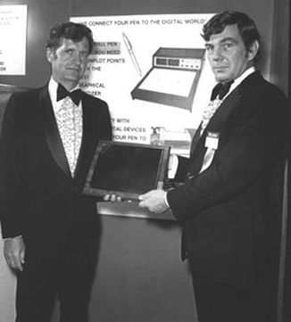
1989年，世界上第一台平板电脑——GridPad发布，来自同样开创了折叠电脑的GRiD Systems公司（参见鱼非鱼：移动计算发展史（2）早期的膝上电脑——折叠电脑）。作为一款使用Intel 8086芯片的如假包换的PC兼容机，它的体积比当时也刚刚问世不久的笔记本还要小，三围只有292 × 236 × 37 mm，重量也只有2kg。它使用一块10英寸的VGA黑白液晶显示屏和一只有线手写笔作为输入输出工具。这款电脑奠定的平板电脑的形式，之后20年都没有太大的改变。GridPad后来也发展成一个产品系列，是平板电脑早期最有影响力的品牌之一。
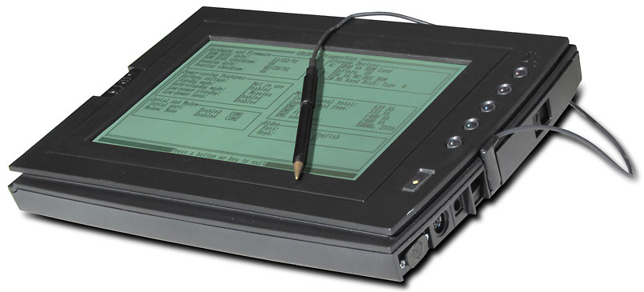
除了GridPad系列以外，GRid还在1992年推出了更小的PalmPad系列，第一款产品2350三围是229x157x48mm，仅重1.3kg，采用6.5寸屏幕，大概相当于当年的ipad mini，同样主要面向设计人员，但可移动性更强。
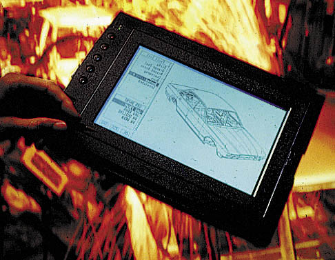
虽然GRiDPad的设计一开始就很成熟，售价也相对不高，初代GRiDPad——也即GRiDPad 1900的上市售价为2370美元，而同时代的折叠电脑和笔记本电脑的售价都要3、5千美元，但市场表现却只是一般。其主要原因，大概是缺少操作系统的支持。早期的GRiDPad仍然需要依赖MSDOS作为操作系统，输入任何指令都需要手写，也只有极少数第一方软件可以真正利用手写的指点效率优势，自然没有太大吸引力。
这一困境直到1991年才得以改变。这一年GO公司发布了世界上第一款基于手写笔的图形操作系统——PenPointOS。
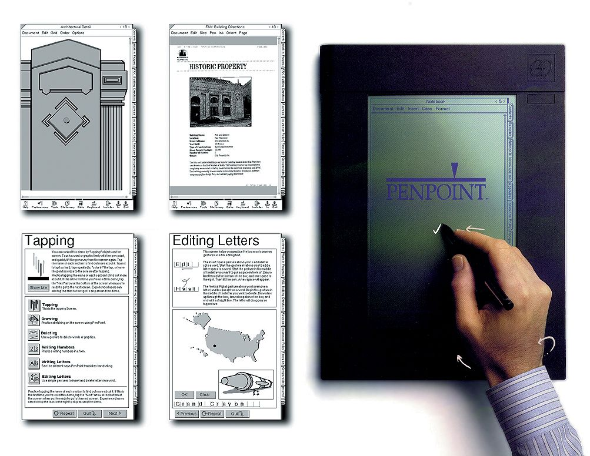
这款操作系统的设计很明显是直接借鉴了带标签的记事本，就像用右边的标签可以很容易找到想要的文档一样，点击PenPointOS的右边栏可以在各个窗口中间切换。
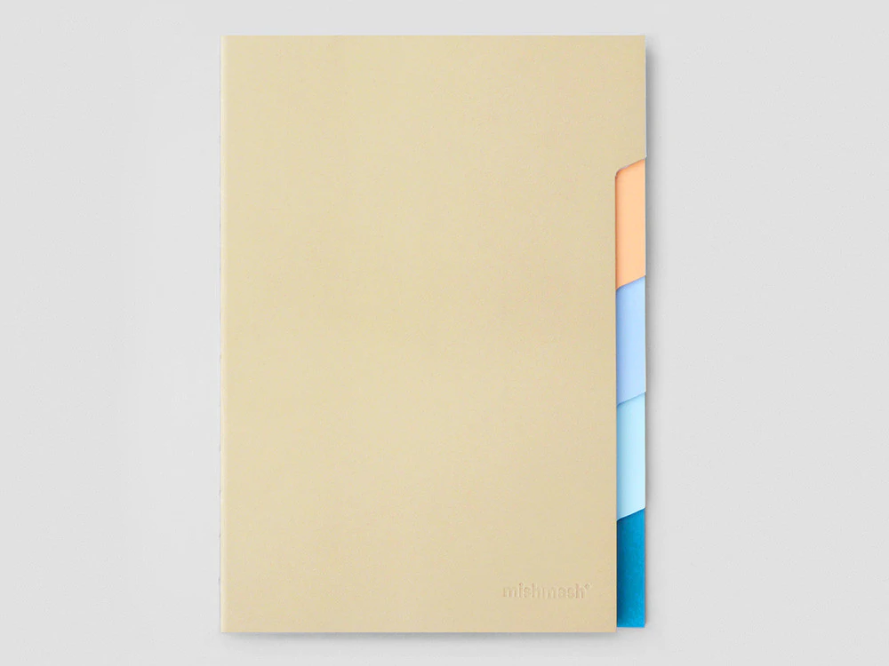
PenPointOS也首创了手写手势，画O是编辑，画X是删除，画^则是插入，很像纸笔编辑时用的标记，容易学习也容易使用；发明了按住后物件变成可拖动的交互逻辑，直到今天仍然被大规模使用；同时采用动态界面，从而支持横竖切换时工具栏自动调整。如果说GRiDPad奠定了平板电脑的硬件基础，PenPointOS就是奠定了平板电脑的软件基础。（PenPointOS的视频介绍请参见GO Corporation - Introducing PenPoint (1991) ）
1992年PenPointOS正式上市后，就很快成为了各种平板电脑的标配。
比如1991年推出时同样只能依赖DOS
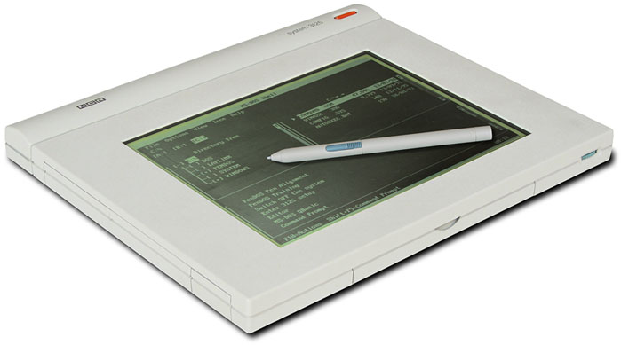
但随后切换到PenPointOS的NCR 3125：
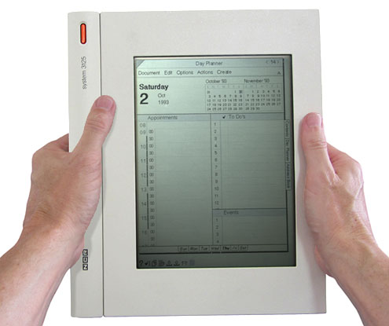
和1992年上市的IBM Thinkpad 2521（后改名为 700T，也就是平板电脑界大名鼎鼎的Thinkpad T系列的开山之作）
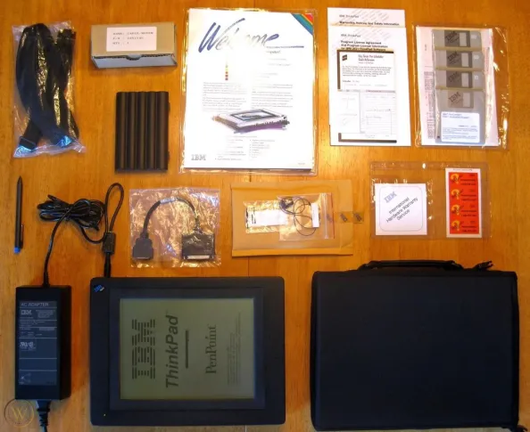
尽管这两款平板电脑的价格都比较贵，需要5、6000美元左右，但好用的基于手写的图形操作系统，更高的配置（Intel 80386，20GB硬盘，最多8MB的内存）让他们反而更受市场欢迎。
同样是基于这款操作系统，1993年上市、通过电信运营商AT&T销售的EO Communicator 440，则针对的是不太一样的客户。它采用的是一颗2MHZ的AT&T芯片，性能要弱的多，但同时机器的尺寸只有280x178x25mm，采用7.5寸屏幕，重量仅为1kg，除了可以作为电脑使用以外，它还可以接上电话设备，用于收发传真和电子邮件。它是一个“大小像电子书，定位像智能手机的平板电脑”，售价1999美元起，主要销售给经常需要在差旅中通过邮件和传真处理文档的商务人士。
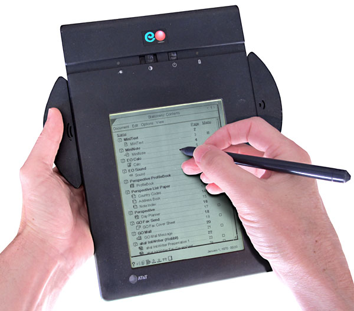
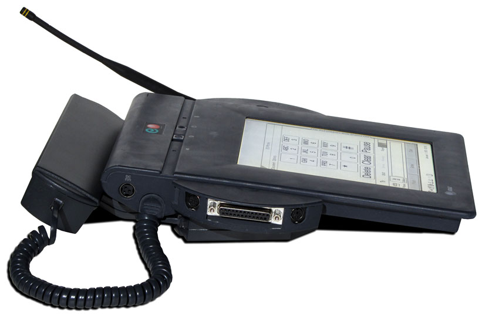
就像Macintosh OS的成功很快引来了Windows一样，微软也没有忽视PenPoint OS的崛起，仅仅在PenPoint OS 发布一年之后，微软就推出了Windows for Pen Computing，它是Windows 3.1系统的一个套件。当然Windows for Pen Computing基本的界面布置还是沿用了Windows的设计，倒不像Windows本身一样，是否是抄袭行为存在很大争议。
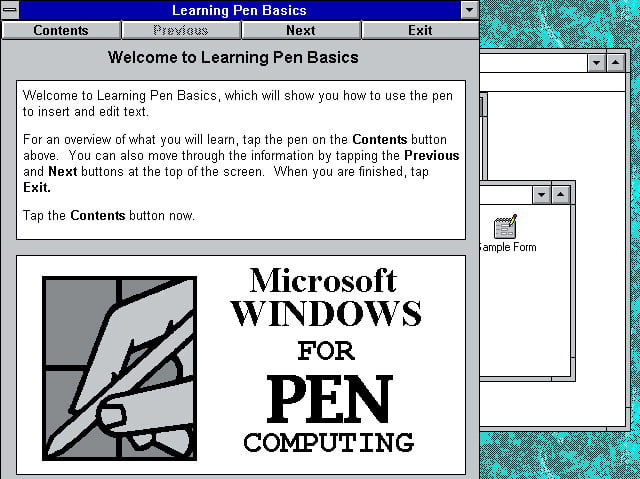
Windows阵营更大的软件库很快也吸引了一些厂商的加入，比如1992年三星推出的PenMaster
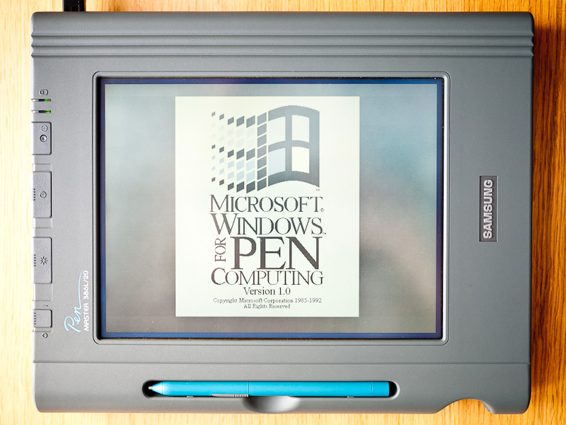
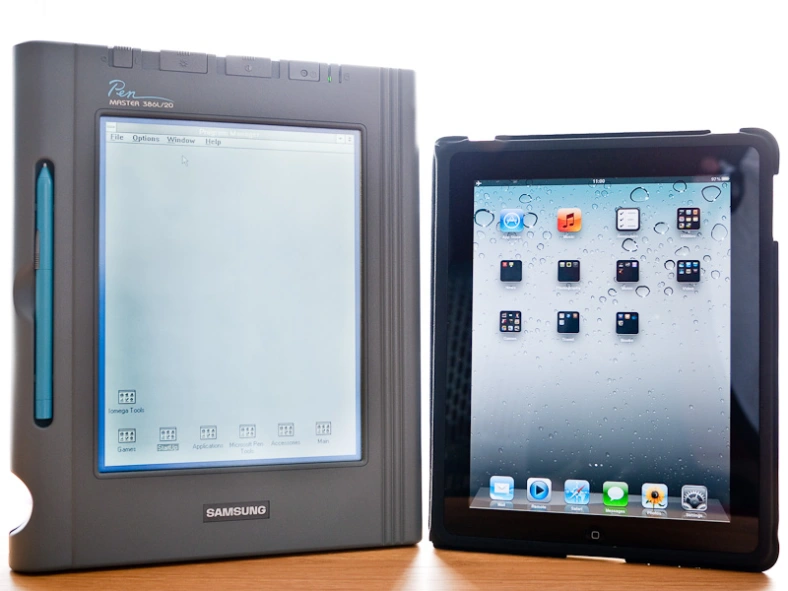
GRiD公司的平板电脑从1992年开始也换用Windows，比如GridPad SL
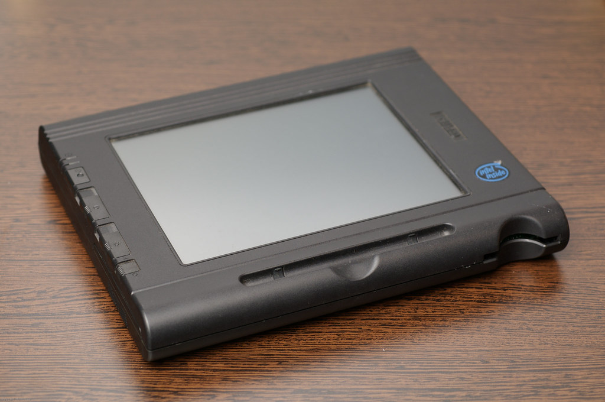
不过Windows真正成为平板电脑的主流操作系统，还要等到Windows 95上市以后，微软在同年推出了Windows for Pen Computing 2.0。
比如在整个00年代初一直雄踞平板电脑领域老大的富士，在1996年推出的第一款平板电脑Stylistic 1000，就采用Windows 95和Windows for Pen Computing 2.0。平板电脑发展到此时，各方面更加均衡。Stylistic 1000有100 Mhz的486DX CPU，340 MB的硬盘和8MB可扩展的内存，在当时算是非常主流。8英寸的屏幕虽然比较小，但185 mm x 279 mm x 40 mm的尺寸和1.6kg的重量还是明显比一般的笔记本轻薄，2800美元的售价也还算合理。
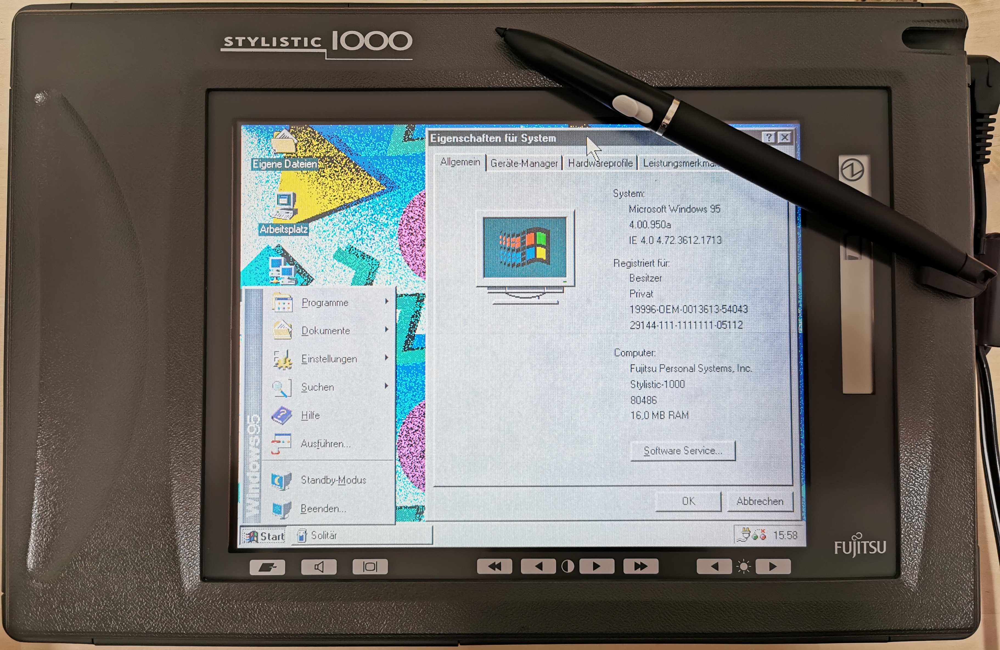
不过，虽然早期的平板电脑开始的模样跟今天的平板电脑很相像，但真正比较主流的触摸屏电脑产品，仍然将键盘加了回去。这类电脑普遍提供了笔记本和平板两种模式，与其叫“平板电脑”，可能叫“变形笔记本”更合适一些。或者也可以跟典型的“平板电脑”合称“手写电脑”。
开创了这类产品的，仍然是GRiD公司。1992年GridPad Convertible上市，虽然增加的键盘和变形机构使得这款电脑重达4.4kg，丧失了平板电脑的便携性，但却大大增强了它的功能性。
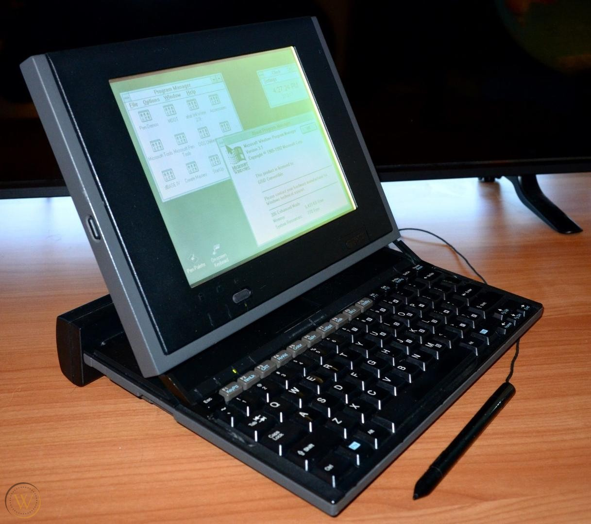
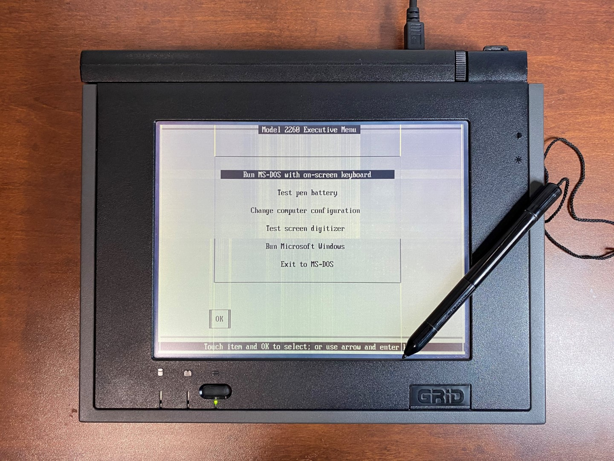
官方声明这款电脑一共有4个形态：
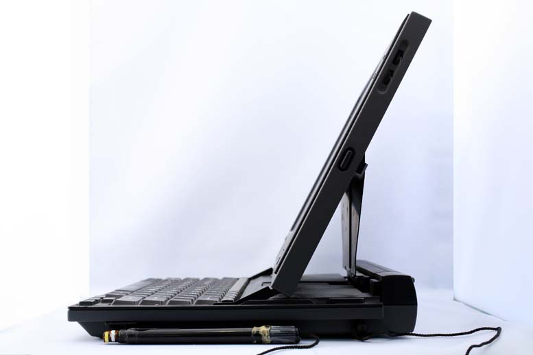
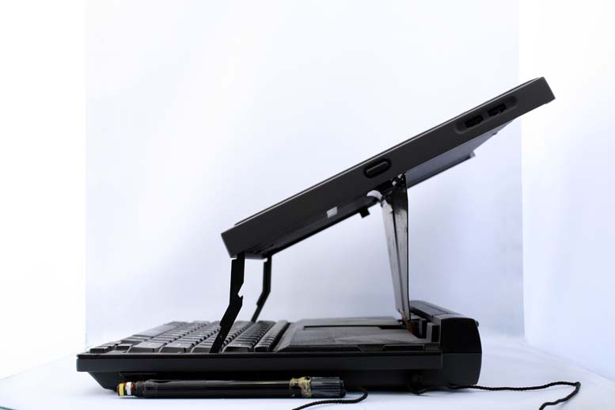
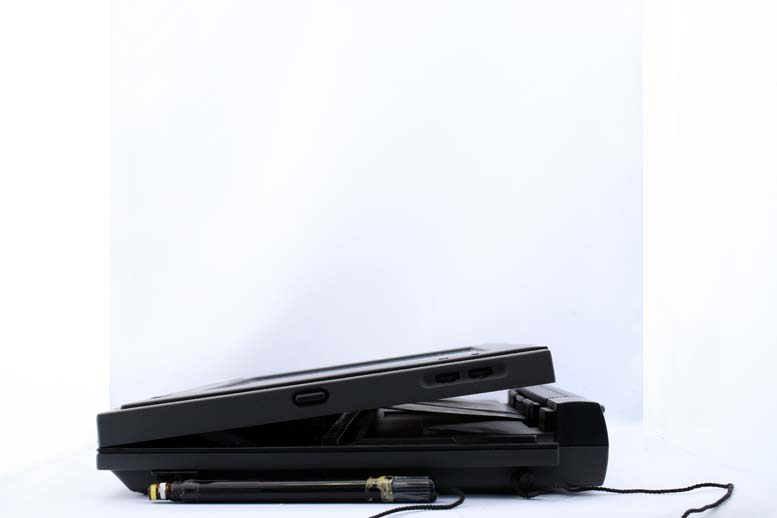
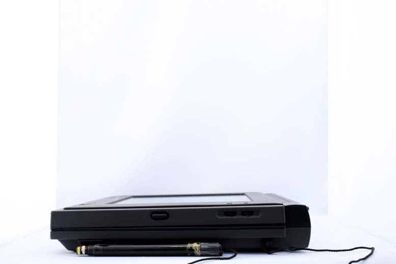
不过这类产品线真正的辉煌，更多的则与富士Lifebook系列联系在一起。
富士 Lifebook最初其实仅仅是普通笔记本增加了触屏和手写笔而已。比如2001年面世的首款产品Lifebook P-1032：
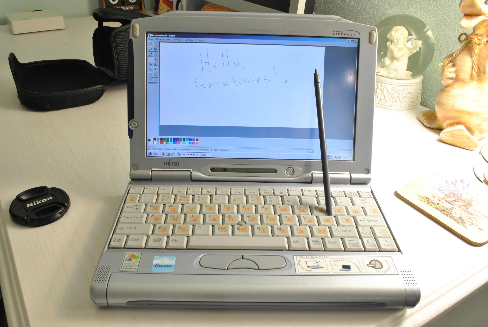
但最经典的富士Lifebook的造型，则是T系列这种屏幕所在的上翻盖可以整体180度翻转，从而变成屏幕直接压在键盘上方的平板造型。而在平板造型下，它也同时适合横持和竖持两种使用模式。T系列的首款产品，就是在2003年上市的T3010
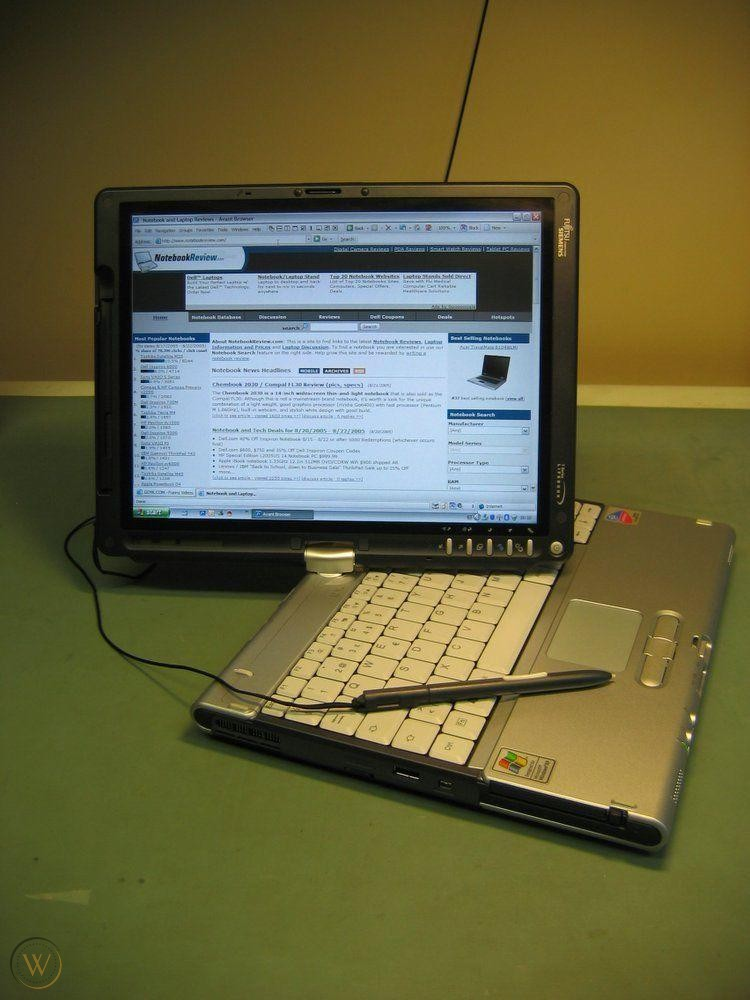
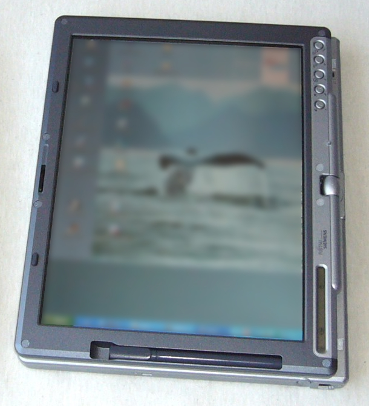
这种造型很快成为了业界标准。比如东芝同年推出的Portegè 3500
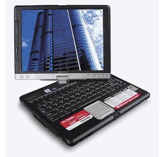
2002年，Windows XP for Tablet PC的发布，也使得Windows软件对手写笔操作普遍有更好的原生支持。微软也开始给这类电脑一个统一的名字：Windows Tablet PC，并开始更积极的推进这类电脑在教育、设计等领域的应用。我读高中和大学的时候，都有老师用这种平板电脑做PPT演示。而直到2014年，我在美国大学的一个美国同学也还在用这种老式平板电脑做笔记。
2009年，平板电脑的全球出货量达到100万台，但这个销量数字在所有便携式电脑——包括笔记本、小笔记本（subnotebook）和平板电脑中占比仍然很低，全部便携式电脑当年销量1.62亿台，其中小笔电也有2900万台。
不过这一切，很快将被一款叫做iPad的产品改变。